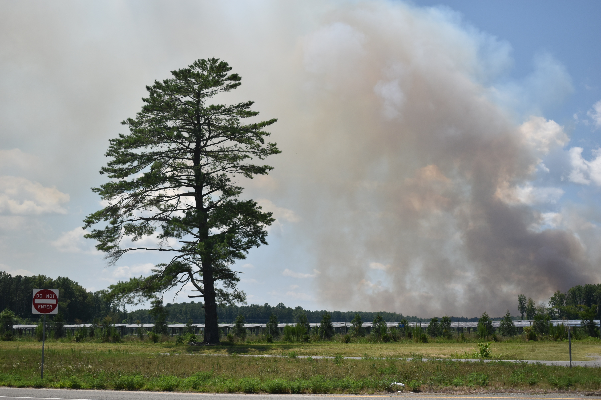

To harvest more than half of America’s cane sugar, billion-dollar companies set fire to fields, a money-saving practice that’s being banned by other countries. Some residents say they struggle to breathe, so we started tracking air quality.
by Lulu Ramadan, The Palm Beach Post, and Ash Ngu and Maya Miller, ProPublica | July 8, 2021

In the fall of 2019, brothers Donovan and Jayceon Sonson spent eight weeks
lying in hospital beds, struggling to breathe.
The young boys, then 5 and 6 years old, had developed upper respiratory
infections on top of the severe asthma they’d had since they were
toddlers.
Anytime they left their apartment, they took their “medicine box,” a
plastic bin filled with red inhalers, prescribed steroids and a pink
nebulizer shaped like a kitten. When the hospital released the boys just
before Thanksgiving, doctors sent the family home with guidance on how to
protect the boys from future episodes. Among the instructions: “Keep your
child away from secondhand smoke.”
Thelma Freeman, the boys’ grandmother, stared at the note. She didn’t
smoke. Neither did anyone in her home. The problem was all around her, she
thought, coming not from smokers but from an industry that provides
thousands of jobs in her town: sugar.